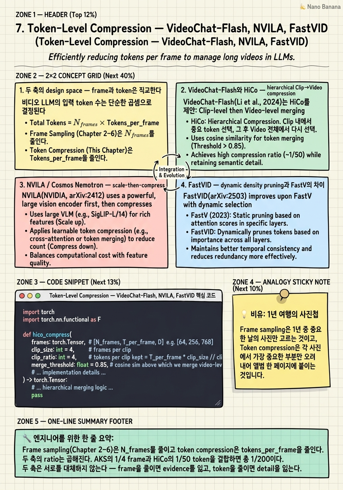

Token-Level Compression — VideoChat-Flash, NVILA, FastVID

🎯 학습 목표
- Frame sampling 축과 token compression 축이 왜 orthogonal한지, 어떻게 동시에 적용되는지 설명할 수 있다
- HiCo의 hierarchical 구조(Clip-level pool → Video-level merge)를 코드 수준에서 구현할 수 있다
- Multi-Hop NIAH 같은 long-context benchmark가 일반 QA가 못 잡는 무엇을 측정하는지 안다
- FastV/FastVID의 layer-attention based pruning이 왜 deep layer에서 안전한지 설명할 수 있다
- 비디오 길이(분/시간)에 따라 sampling-only vs sample+compress vs sample+memory+compress 중 무엇을 선택할지 결정할 수 있다
- NVILA의 "scale-then-compress" 가 단순히 frame 수를 줄이는 것보다 왜 효과적일 수 있는지 안다
지금까지 Chapter 2–6은 "몇 개의 frame을 LLM에 넣을 것인가"라는 단일 축을 다뤘다. 그러나 token economics는 frame 수만으로 결정되지 않는다. SigLIP/CLIP encoder는 frame 하나를 보통 256–729개의 vision token으로 토큰화하고, 이 token들이 LLM의 context로 흘러들어간다. 64 frame × 256 token/frame = 16,384 token이라는 단순 계산만으로도 short context 모델의 한계를 즉시 넘어간다. 따라서 "frame을 잘 골랐다"는 것은 절반의 승리일 뿐이고, frame 하나당 token 수를 어떻게 줄일지가 나머지 절반이다. 이 챕터는 그 직교 축을 다룬다. VideoChat-Flash의 HiCo는 clip 단위 압축 후 video 단위 merging으로 ~1/50 ratio를 달성하면서 10K-frame Multi-Hop NIAH에서 99.1%를 찍는다(arXiv:2501.00574). NVILA는 반대로 "먼저 frame을 256개까지 늘리고 token을 공격적으로 압축한다"는 scale-then-compress 전략을 취한다(arXiv:2412.04468). FastVID는 inference-time에 attention score 기반 dynamic density pruning을 적용해 retraining 없이 latency를 낮춘다(arXiv:2503.11187). 마지막 절은 "언제 sampling만 쓰고 언제 compression을 더할지"의 실전 decision tree와, 두 축을 곱해서 생기는 cost를 어떻게 모델링할지를 다룬다.
핵심 내용
1. 두 축의 design space — frame과 token은 직교한다
비디오 LLM의 입력 token 수는 단순한 곱셈으로 결정된다. total_tokens = N_frames × tokens_per_frame + text_tokens. Chapter 2–6에서 다룬 모든 sampler(AKS, BOLT, Frame-Voyager, Q-Frame, AdaRD-Key, FOCUS, LongVU)는 첫 번째 인자 N_frames만을 줄인다. 그러나 두 번째 인자 tokens_per_frame은 encoder가 결정하며, 기본값은 SigLIP의 729 token, CLIP-L/14 336px의 576 token, Qwen2.5-VL의 동적 patch 수 등 모두 수백 token이다. 64 frame × 729 = 46,656 vision token은 32K context 모델의 절반을 단독으로 차지한다. 두 축이 직교한다는 말의 의미는 (a) 어느 축의 개선도 다른 축을 막지 않고, (b) 두 축의 ratio가 곱해진다는 것이다. AKS가 frame을 1/4로 줄이고 HiCo가 token을 1/50로 줄이면 총 압축 ratio는 1/200이다. 실전에서는 이 곱셈이 무조건 좋은 것은 아니다 — 너무 압축하면 fine-grained QA에서 성능이 떨어진다. 따라서 결정해야 할 것은 "두 축을 어떻게 budget할 것인가"이며, 이는 비디오 길이, task 종류(요약 vs needle-in-haystack), latency 요구사항에 의존한다. 이 챕터의 핵심 명제 하나: frame을 줄이는 것은 evidence를 잃는 것이고, token을 줄이는 것은 detail을 잃는 것이다. 두 손실의 형태가 다르기 때문에 두 도구는 서로를 대체할 수 없다.
2. VideoChat-Flash와 HiCo — hierarchical Clip→Video compression
VideoChat-Flash(Li et al., ICLR 2026 submission, arXiv:2501.00574, OpenGVLab)는 "Hierarchical Compression(HiCo)"이라는 2단계 token 압축을 핵심으로 한다.
Stage 1 — Clip-level compression: 비디오를 짧은 clip(보통 4–8 frame)으로 분할한 뒤, 각 clip 내부에서 spatial pooling과 temporal aggregation을 결합해 token 수를 크게 줄인다. Clip 안에서는 frame 사이 redundancy가 매우 높기 때문에(같은 장면, 비슷한 배경) 공격적으로 pool 해도 정보 손실이 작다.
Stage 2 — Video-level merging: clip별로 압축된 token들을 모은 뒤, 비슷한 token들을 cosine similarity 기준으로 merge한다. 영화의 여러 scene이 똑같은 배경에서 일어나면 그 "배경 token"들이 video level에서 한 번 더 합쳐진다.
두 stage가 합쳐져 ~1/50의 compression ratio를 만든다. 이 ratio가 의미하는 것은 "같은 GPU memory로 50배 긴 비디오를 처리할 수 있다"는 것이다. VideoChat-Flash는 기본 1 fps로 최대 768 frame을 처리하고, 10,000 frame까지 단일 forward pass로 처리할 수 있다.
Key 결과는 Multi-Hop NIAH(Needle-in-A-Haystack) at 10K frames에서 99.1% recall이다. NIAH는 긴 비디오 안에 의도적으로 "바늘" 영상 토막을 숨기고 그것을 찾아내는 능력을 측정한다. 일반 QA가 "이 비디오가 무슨 내용인가" 같은 global 질문에 강하다면 NIAH는 "이 비디오의 3:42에 어떤 단어가 적혀 있었나" 같은 local recall 질문을 측정한다. 99.1%는 압축이 globally aggressive하더라도 locally critical한 정보는 보존됨을 보여준다 — 이것이 HiCo의 가장 강한 주장이다.
HiCo가 plug-and-play sampler들과 다른 점: sampler는 LLM 외부의 decision이고, HiCo는 LLM의 vision-language projector 직전 단계에서 token tensor 자체를 줄인다. 따라서 sampler와 결합 가능하다 — AKS로 frame을 고른 다음 HiCo로 token을 줄이는 파이프라인이 자연스럽다. Repository: github.com/OpenGVLab/VideoChat-Flash.
3. NVILA / Cosmos Nemotron — scale-then-compress
NVILA(NVIDIA, arXiv:2412.04468)는 정반대의 직관에서 출발한다. 기존 video-LLM은 "frame 수와 frame당 token 수를 둘 다 적게" 쓰지만, NVILA는 "frame 수를 먼저 키우고, 그다음에 frame당 token을 공격적으로 줄인다." 이것이 *scale-then-compress* 전략이다.
구체적으로 NVILA는 최대 256 frame을 입력으로 받지만 LLM context에는 그중 일부만 들어가도록 token level에서 강하게 압축한다(공개된 변형에서는 ~16 frame 정도의 token만큼). 왜 이렇게 하는가? 두 가지 직관: (1) temporal redundancy를 활용하려면 먼저 dense하게 봐야 한다. 16 frame을 uniform으로 뽑으면 어떤 빠른 action은 영영 잡지 못한다. 256 frame을 보면 그 action이 한 frame에 잡혀 있고, compressor가 "이 frame은 다른 frame과 달라서 살려야 한다"는 신호를 추출할 수 있다. (2) encoder는 한 번 돌리면 끝이지만 LLM은 비싸다. SigLIP에 256 frame을 흘리는 것은 GPU memory만 충분하면 빠른 batch 연산이고, 비싼 비용은 LLM context에 들어가는 token 수에 비례한다.
Scale-then-compress는 따라서 "encoder는 dense하게, LLM은 sparse하게"로 요약할 수 있다. Chapter 6에서 다룬 LongVU의 DINOv2 temporal pruning과 가까운 발상이지만, NVILA는 짧은 비디오(분 단위)에서도 같은 전략을 일관적으로 적용한다는 점이 다르다.
이것이 frame sampling literature에 던지는 메시지: "frame을 적게 뽑는 것이 cheap한 게 아니라, frame 수만큼 LLM context를 차지하는 것이 expensive하다." 만약 token compression이 매우 강력하다면, 굳이 정교한 sampler를 쓰지 않고 "많이 뽑고 많이 압축하기"가 경쟁력 있는 baseline이 된다. NVILA 결과는 Video-MME와 EgoSchema에서 그것이 사실임을 보여준다 — 단, NIAH류 fine-grained benchmark에서는 여전히 sampler가 도움이 된다.
4. FastVID — dynamic density pruning과 FastV의 차이
FastVID(arXiv:2503.11187)는 학습 없이 inference 시점에 token을 잘라내는 *dynamic density pruning* 방법이다. 출발점은 image-LLM에서 유명한 FastV(Chen et al., ECCV 2024)다. FastV는 한 가지 관찰에서 출발한다: LLM의 vision token에 대한 attention score는 shallow layer에서는 균등하게 분포하지만, deep layer로 갈수록 매우 sparse해진다. 즉 깊은 layer에서는 대부분의 vision token이 사실상 무시되고 있다. 따라서 특정 layer(보통 layer 2–3) 이후에는 attention score가 낮은 vision token을 잘라내도 출력 품질이 크게 떨어지지 않는다. FastV는 image 한 장에 대해 이 pruning을 수행한다.
FastVID가 video로 확장하면서 더하는 두 가지:
(1) Frame-wise density variation — 비디오의 어떤 구간은 정적(말하는 머리 shot)이고 어떤 구간은 동적(액션 장면)이다. FastVID는 attention 분포의 entropy를 frame 단위로 추정해서, 정적 구간에서는 더 공격적으로 잘라내고 동적 구간에서는 보존한다. 이것이 "dynamic density"라는 말의 의미다.
(2) Temporal contiguity preservation — image FastV처럼 token 하나씩 독립적으로 자르면 인접 frame의 같은 영역이 들쭉날쭉 살아남아 LLM이 motion을 잃는다. FastVID는 인접 frame 간에 같은 spatial 위치의 token이 함께 살아남거나 함께 죽도록 제약을 건다.
FastV/FastVID 모두 retraining이 필요 없는 inference-time 기법이다. 따라서 이미 배포된 video-LLM 위에 즉시 얹어 latency를 낮추는 용도로 적합하다. HiCo가 architecture에 굳어진 방식이라면 FastVID는 plug-in 방식이다. 두 가지를 함께 쓰는 것도 가능하다 — HiCo가 한 번 strongly compress하고, FastVID가 deep layer에서 한 번 더 잘라낸다.
주의할 점: layer-attention pruning은 deep layer에서 안전하지만 shallow layer에서는 위험하다. shallow layer는 아직 vision token 간의 관계를 파악 중이기 때문에 여기서 자르면 의미 있는 정보가 사라진다. FastV/FastVID의 hyperparameter 중 "어느 layer부터 자를 것인가(보통 K=2)"가 가장 sensitive하다.
5. 언제 sample하고 언제 compress하는가 — decision tree
두 축이 직교한다는 것은 "둘 다 쓸 수 있다"는 뜻이지만, 무조건 둘 다 써야 하는 것은 아니다. 비디오 길이와 task 종류에 따른 실전 decision tree:
Tier 1 — 짧은 비디오(<2분, 30초 클립 등): 그냥 uniform sample. 16–32 frame이면 충분하고 SigLIP의 default token 수도 LLM context에 들어간다. Compression을 추가해도 latency만 늘고 정확도 이득은 거의 없다. *Token compression이 손해*가 되는 첫 번째 영역이다.
Tier 2 — 중간 비디오(2–30분, 강의 영상, podcast): Sample + compress. AKS/BOLT/Q-Frame으로 64–128 frame을 뽑고, HiCo 같은 hierarchical compressor로 token을 1/8~1/16 줄인다. NVILA-style scale-then-compress(256 frame → 강 압축)도 이 영역에서 유효하다.
Tier 3 — 긴 비디오(30분–몇 시간, 영화, 강의 시리즈): Sample + memory + compress. Chapter 6의 Hour-LLaVA / MemAug 같은 memory mechanism이 더해진다. HiCo만으로는 부족하다 — clip 단위 압축은 여전히 clip 수에 비례해 늘어나기 때문이다. 압축 ratio가 1/50이어도 10시간 비디오면 frame이 36,000개라 압축 후도 720개의 clip 단위 token block이 남는다.
Task별 미세 조정: - 요약/global QA: 강 압축이 안전. 세부 detail이 별로 안 중요. - NIAH / fine-grained QA: 압축에 보수적이어야 한다. 특히 spatial token을 너무 강하게 pool하면 OCR-style 질문이 망가진다. - action recognition: temporal redundancy를 압축해야 한다(같은 frame 반복 제거). spatial은 보존. - dialogue/lecture: ASR text 채널이 있으면 vision token을 더 공격적으로 줄여도 된다.
Cost model: 두 축의 비용은 다음과 같이 모델링할 수 있다.
`
cost ≈ α · N_frames · T_per_frame (encoder) + β · (N_frames · T_per_frame)^2 (LLM attention)
`
LLM attention이 quadratic이기 때문에 compression의 한계 이득이 sampling보다 크다. 즉 64 frame을 32로 줄이는 것보다 frame당 token을 256→128로 줄이는 것이 같은 비율인데도 LLM 비용은 더 많이 떨어진다(특히 attention이 dominant한 경우). 이것이 NVILA가 scale-then-compress를 정당화하는 이론적 근거다.
💡 비유로 이해하기
1년 동안 세계 여행을 다니며 매일 30장씩 찍은 사진 10,000장이 있고, 이걸 한 권의 사진첩으로 만들어 가족에게 보여줘야 한다고 생각해보자. 사진첩에는 200장만 들어간다.
결정해야 할 것은 두 가지다.
축 1 — 어느 200장을 고를 것인가: 매일 한 장씩 균일하게? 가장 인상 깊었던 사진들만? 가족이 보고 싶어할 만한 사람·장소 위주로? 이것이 *frame sampling*이다. AKS, BOLT, Frame-Voyager는 각각 다른 기준으로 200장을 고른다.
축 2 — 각 사진을 얼마나 크게 인쇄할 것인가: 한 페이지를 가득 채울 것인가, 손바닥만 한 thumbnail 9장씩 한 페이지에 넣을 것인가, 아니면 콜라주처럼 합쳐서 한 페이지에 30장을 우겨넣을 것인가? 이것이 *token compression*이다. HiCo는 콜라주 방식(여러 사진을 비슷한 것끼리 합치기), NVILA는 "많이 모아서 작게 인쇄하기", FastVID는 "인쇄소에서 잉크 절약 모드로 출력하기"에 해당한다.
두 결정은 *독립적*이다. 200장을 정성껏 골라도 모두 thumbnail로 인쇄하면 표정이 안 보인다. 1,000장을 막 골라도 잘 압축해서 잘 배치하면 200장 풀 페이지보다 더 많은 정보를 전달할 수도 있다(NVILA의 주장). 가족이 "바르셀로나에서 본 그 작은 골목 표지판 글자가 뭐였더라"를 물어보면(NIAH 질문) thumbnail은 망한다 — 이때는 그 한 장을 풀 페이지로 인쇄해야 한다(local detail 보존). 반대로 "올해 여행이 어땠어?"는 요약 질문(global QA)이라 thumbnail 콜라주로도 충분하다.
결정은 결국 "보여줄 사람의 질문 종류"와 "사진첩의 페이지 수(LLM context window)"의 함수다. 두 손잡이를 *독립적으로* 돌릴 수 있다는 사실 자체가 이 챕터의 가장 큰 메시지다.
💻 코드 예시
HiCo의 핵심 아이디어인 "clip-level pool 후 video-level cosine-similarity merge"를 최소 구현한다. 실전 HiCo는 학습된 projector를 쓰지만, 여기서는 mean pooling과 greedy merging만으로 그 골격을 보여준다. clip_ratio와 merge_threshold 두 손잡이로 압축 강도를 조절할 수 있고, 최종 token 수를 출력하면 frame sampling과 곱해진 총 ratio를 즉시 확인할 수 있다.
import torch
import torch.nn.functional as F
def hico_compress(
frames: torch.Tensor, # [N_frames, T_per_frame, D] e.g. [64, 256, 768]
clip_size: int = 4, # frames per clip
clip_ratio: int = 4, # tokens per clip kept = T_per_frame * clip_size // clip_ratio
merge_threshold: float = 0.85, # cosine sim above which we merge video-level
) -> torch.Tensor:
"""HiCo-style hierarchical token compressor.
Stage 1: split frames into clips, mean-pool each clip to (T*clip_size/clip_ratio) tokens.
Stage 2: across all clips, greedily merge tokens whose cosine similarity > threshold.
"""
N, T, D = frames.shape
assert N % clip_size == 0, "N_frames must be divisible by clip_size"
# --- Stage 1: clip-level mean pooling ---
n_clips = N // clip_size
clipped = frames.view(n_clips, clip_size, T, D) # [C, K, T, D]
flat = clipped.reshape(n_clips, clip_size * T, D) # [C, K*T, D]
keep_per_clip = (clip_size * T) // clip_ratio
# adaptive 1d pool along token axis
pooled = F.adaptive_avg_pool1d(
flat.transpose(1, 2), output_size=keep_per_clip # [C, D, keep]
).transpose(1, 2) # [C, keep, D]
tokens = pooled.reshape(-1, D) # [C*keep, D]
# --- Stage 2: video-level cosine-similarity greedy merging ---
normed = F.normalize(tokens, dim=-1)
sims = normed @ normed.T # [M, M]
M = tokens.shape[0]
alive = torch.ones(M, dtype=torch.bool)
merged = tokens.clone()
counts = torch.ones(M)
for i in range(M):
if not alive[i]:
continue
# find later tokens highly similar to token i
mask = (sims[i] > merge_threshold) & alive
mask[: i + 1] = False
if mask.any():
merged[i] = (merged[i] * counts[i] + tokens[mask].sum(0)) / (counts[i] + mask.sum())
counts[i] += mask.sum()
alive[mask] = False
out = merged[alive]
print(f"input {N*T:>6} tokens -> stage1 {tokens.shape[0]:>5} -> stage2 {out.shape[0]:>4}")
print(f"total compression ratio: {N*T / out.shape[0]:.1f}x")
return out
if __name__ == "__main__":
frames = torch.randn(64, 256, 768) # 64 frames, 256 tokens each (SigLIP-ish)
compressed = hico_compress(frames, clip_size=4, clip_ratio=8, merge_threshold=0.9)Stage 1 (lines 23–33): [64 frame, 256 token, 768 dim] 입력을 4-frame clip으로 자른다 → 16 clip. 각 clip 내부의 4*256=1024 token을 1D adaptive pooling으로 1024/clip_ratio token으로 줄인다. clip_ratio=8이면 clip당 128 token, 총 16*128 = 2,048 token. 이미 원본 64*256 = 16,384에서 8x 압축된 상태다.
Stage 2 (lines 35–46): 모든 clip의 token을 펼친 뒤 L2 정규화 → cosine similarity matrix를 만든다. greedy 순회로 "나보다 뒤에 있고 sim > threshold인 token들"을 평균에 흡수한다. count로 weighted average를 유지해서 자주 등장하는 패턴(예: 검은 배경)이 한 번만 살아남게 한다. 실제 HiCo는 learned projector + cross-attention pooling을 쓰지만, greedy cosine merge가 그 골격을 충분히 보여준다.
확장 포인트: (a) Stage 1의 pooling을 attention-weighted로 바꾸면 motion-heavy frame이 보존되도록 만들 수 있다. (b) Stage 2의 merge_threshold를 frame index에 따라 가변으로 만들면 FastVID 같은 dynamic density 효과를 흉내낼 수 있다. (c) clip_ratio와 merge_threshold 두 손잡이는 paper의 ~1/50 ratio를 재현할 수 있을 만큼 강력하다 — 예: clip_ratio=16, threshold=0.8을 쓰면 위 예제에서 ~300 token까지 떨어진다(약 50x).
Sampler와의 결합: 이 함수의 입력 frames는 Chapter 3–4의 AKS/Frame-Voyager가 *이미 뽑은* frame들의 vision embedding이라고 보면 된다. 즉 sampling과 compression은 코드 레벨에서 완전히 분리된 두 함수이며, 곱해진 압축 ratio가 전체 token budget을 결정한다.
🏭 현업에서의 평가
✅ 시니어가 보는 것
- Frame sampling과 token compression이 직교 축임을 명확히 구분하는가 — 두 ratio를 곱해서 전체 budget을 산출할 수 있는가
- 비디오 길이/task별 압축 전략의 trade-off를 설명할 수 있는가 (요약은 강 압축 OK, NIAH/OCR은 보수적)
- FastV/FastVID의 layer-K pruning이 attention 분포의 sparsity 관찰에 기반함을 안다
- HiCo의 ~1/50 ratio가 실제 deployment에서 의미하는 것(GPU memory, latency, max video length)을 정량화할 수 있다
- Inference-time(FastVID) vs architecture-level(HiCo, NVILA) compression의 deployment 차이를 안다 (재학습 필요 여부, plug-in 가능 여부)
- NIAH 같은 stress test와 일반 QA benchmark가 측정하는 차원이 다름을 설명할 수 있다
⚠️ 레드 플래그
- "압축은 무조건 좋다"라고 답한다 — 짧은 비디오에서는 손해가 된다는 점을 모른다
- Frame sampling과 token compression을 "같은 문제의 다른 표현"이라고 답한다(두 축이 직교함을 모름)
- FastV가 attention score 기반임을 모르고 "random pruning과 비슷한 것"이라고 설명한다
- NIAH가 측정하는 것을 "일반 QA의 어려운 버전"이라고만 답한다 — local recall vs global understanding 구분을 못함
- 1시간 비디오에 HiCo만으로 충분하다고 답한다 — memory mechanism의 필요성을 모름
- NVILA의 scale-then-compress를 단순히 "frame 수 늘리기"로 이해한다 — encoder/LLM cost 비대칭이 핵심임을 놓침
🎤 예상 인터뷰 질문
- **Q1**: 30초짜리 surveillance clip에 대해 "불법 주차 차량의 번호판이 뭐였나"를 묻는 task가 있다. HiCo로 1/50 token compression을 적용해야 할까? Yes/No와 그 이유를 first principle로 답하라. (기대 답: No에 가깝다. 짧은 비디오라 token이 이미 작고, 번호판 OCR은 spatial high-frequency 정보라 강 pooling에 매우 취약하다. 짧은 비디오에서 압축은 latency 이득은 작은데 task별 위험이 크다.)
- **Q2**: FastV는 어떤 layer K부터 vision token을 자른다. K=2가 일반적이다. K=0(첫 layer부터 자르기)이 왜 성능을 망가뜨리는지, K=20(매우 깊은 layer부터)이 왜 latency 이득이 작은지 attention 분포 관점에서 설명하라. (기대 답: shallow layer의 attention은 균등 — vision token 간 관계를 아직 형성 중이라 자르면 정보 손실. deep layer는 이미 sparse — 자르나 마나 출력은 거의 같지만 그 layer 이후 KV cache만 줄어서 이득이 작다. 가장 큰 이득은 "attention이 sparse해지기 시작하는 첫 번째 지점"에서 자를 때.)
- **Q3**: Multi-Hop NIAH at 10K frames에서 99.1% recall을 측정한다는 것은 일반적인 Video-MME 평균 정확도가 측정하지 못하는 무엇을 보장하는가? 그리고 이 차이가 실제 product 결정(예: 1시간 강의 영상 QA 서비스)에 어떻게 반영되어야 하는가? (기대 답: NIAH는 long-context에서의 *local* 정보 추출 — 압축이 globally OK여도 specific moment를 lose하지 않음을 보장한다. Video-MME 평균은 "보통의 질문"에 대한 평균 성능이라 압축으로 인한 long-tail 실패를 가린다. Product 관점에서 강의 영상 QA는 NIAH-like 질문이 매우 흔하다("45분쯤에 교수가 보여준 그래프가 뭐였지?") → NIAH 점수가 production 성능의 더 좋은 proxy다. Video-MME만 보고 의사결정하면 user-facing 실패를 놓친다.)
✨ 핵심 요약
Frame과 token은 직교 축이다
Frame sampling(Chapter 2–6)은 N_frames를 줄이고 token compression은 tokens_per_frame을 줄인다. 두 축의 ratio는 곱해진다. AKS의 1/4 frame과 HiCo의 1/50 token을 결합하면 총 1/200이다. 두 축은 서로를 대체하지 않는다 — frame을 줄이면 evidence를 잃고, token을 줄이면 detail을 잃는다.
HiCo의 hierarchical 구조가 1/50 ratio를 만든다
VideoChat-Flash(arXiv:2501.00574)의 HiCo는 Clip-level pooling(stage 1)과 Video-level similarity merging(stage 2)을 결합해 ~1/50 압축을 달성하면서 10K-frame Multi-Hop NIAH에서 99.1% recall을 유지한다. 핵심 아이디어는 "clip 내부는 redundant, video 전체는 patterned"라는 두 가지 redundancy를 따로 다루는 것이다.
NVILA의 scale-then-compress는 encoder/LLM 비용 비대칭을 활용한다
NVILA(arXiv:2412.04468)는 frame을 256까지 늘리고 token을 공격적으로 줄인다. encoder는 한 번이고 batch-friendly한 반면 LLM context는 attention quadratic이라 비용 dominant — "먼저 dense하게 보고 늦게 sparse하게 줄이기"가 정당화된다. 이것은 sampler를 정교화하는 것의 대안적 baseline이다.
FastVID는 training-free plug-in이다
FastVID(arXiv:2503.11187)는 FastV의 layer-K attention pruning을 video로 확장하면서 dynamic density(frame 단위 entropy)와 temporal contiguity를 추가한다. 재학습 없이 이미 배포된 video-LLM에 얹을 수 있다는 점이 production 가치다. K=2 근처가 일반적이고 그보다 얕거나 깊으면 이득이 줄거나 정확도가 깨진다.
압축은 짧은 비디오에서는 손해, 긴 비디오에서는 필수다
<2분 비디오는 sampling만으로 충분하고 압축은 latency 이득은 작고 task별 위험은 크다. 2–30분은 sample+compress, 30분 이상은 sample+memory+compress가 표준이다. "무조건 압축"이 아니라 비디오 길이와 task에 따른 decision tree가 필요하다.
NIAH는 일반 QA가 못 보는 long-tail 실패를 측정한다
Multi-Hop NIAH는 긴 비디오 안 특정 순간의 local 정보를 정확히 recall하는 능력을 잰다. Video-MME 같은 평균 정확도는 "평범한 질문"에 대한 성능이라 압축으로 인한 local 실패가 가려진다. 강의·법률·의료 등 specific moment를 묻는 도메인에서는 NIAH가 production proxy로 더 좋다.
Layer-attention pruning은 sparsity가 시작되는 지점에서 잘라야 한다
Shallow layer에서는 attention이 균등하므로 자르면 정보가 사라진다. Deep layer에서는 이미 sparse해서 자르나 마나 같다. 가장 큰 이득은 "attention이 sparse해지기 시작하는 첫 번째 layer"에서 잘랐을 때이고, 이것이 FastV/FastVID의 K hyperparameter가 sensitive한 이유다.
두 축의 cost는 곱해지지만 quadratic은 token 축에 더 무겁다
LLM attention 비용은 token 수에 quadratic하기 때문에 같은 1/2 ratio라도 token 압축이 frame 압축보다 LLM 비용을 더 많이 떨어뜨린다. 이것이 NVILA가 "frame을 줄이는 것보다 frame당 token을 줄이는 것이 효율적"이라고 주장하는 이론적 근거다. 시스템 설계 때 두 축의 marginal cost를 따로 모델링해야 한다.